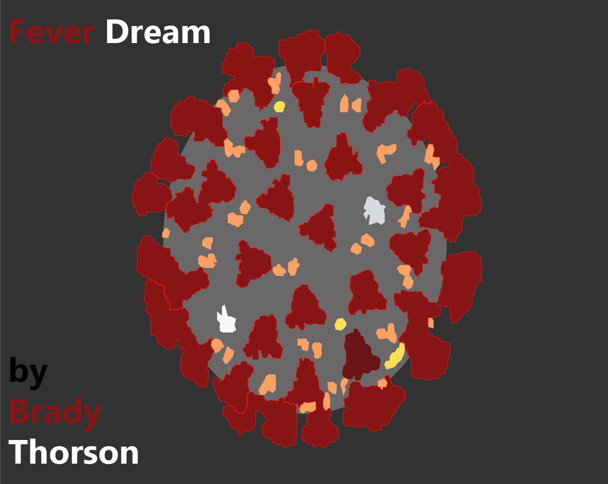
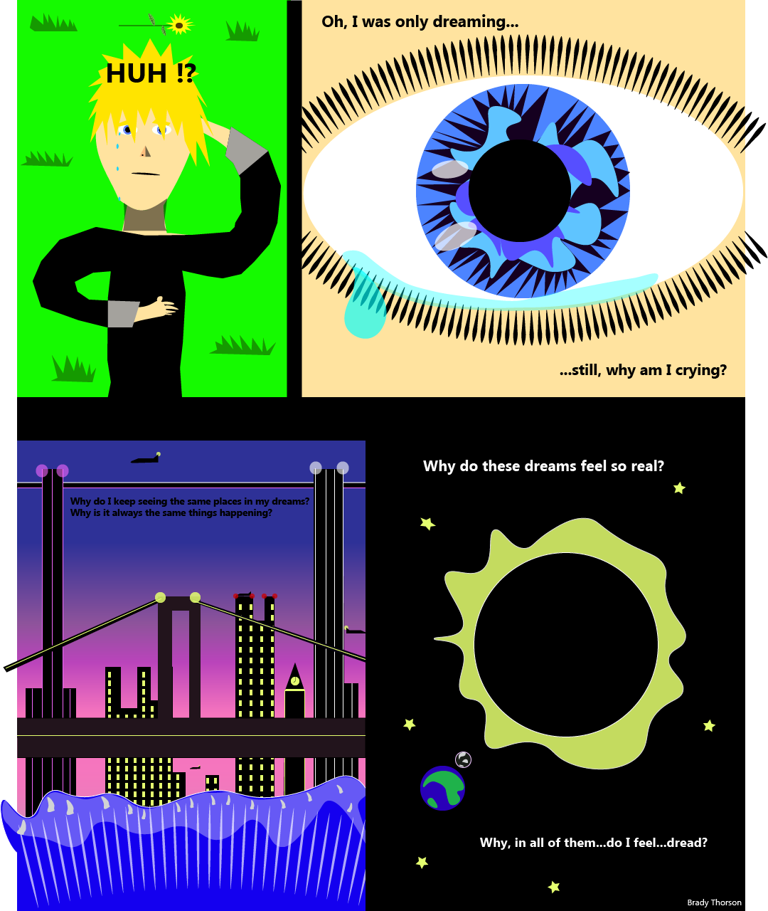

Ever since mid-February, 2020 I have been having dreams that repeat. I've seen the same 4-5 places every night. I'm not sure what my goal is in these dreams but it feels like I have a consistent motive throughout the dreams. Furthermore these dreams all have a real feeling of life and death. I never feel safe or settled in these dreams. Ever since quaratine started in March the dreams have only become more intense and more life-like. I've spoken to a few people who have also experience similar feeling dreams and in my brother's case even eerily similar settings. These dreams have both haunted me and compelled me. I don't know what to do with the feelings that these dreams give me so I decided to show what these dreams look like and how they have made me feel upon thinking about them. I have done this in the style of a comic book. The cover and the first page. The cover is a vector tracing based off the digital, microscopic image of Covid_19. The first page is all original vector illustration.
 